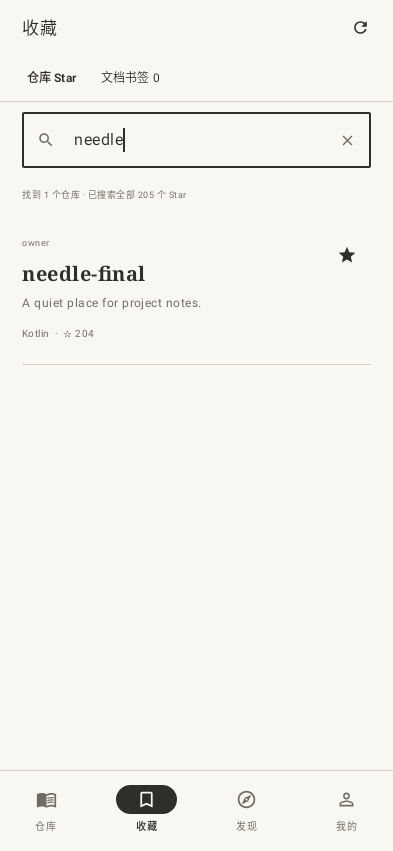
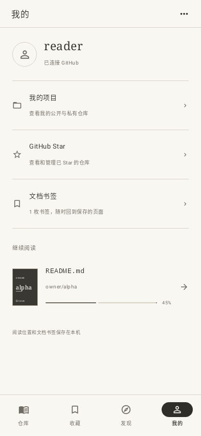
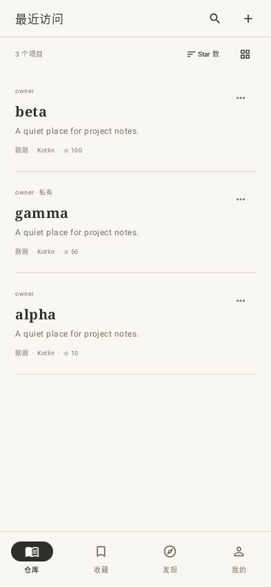
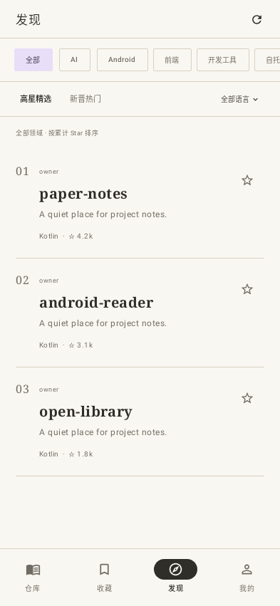

<!doctype html>
<html lang="zh-CN">
<meta charset="utf-8">
<meta name="viewport" content="width=device-width,initial-scale=1">
<title>Grove · 产品界面</title>
<style>
*{box-sizing:border-box}
html,body{margin:0;width:1200px;height:700px;overflow:hidden;background:#f1eee6;color:#302e28}
body{font-family:Georgia,"Songti SC",serif}
header{position:absolute;inset:33px 44px auto;display:flex;justify-content:space-between;align-items:center;font:11px -apple-system,sans-serif;letter-spacing:2px;color:#706c63}
header strong{font:24px Georgia,serif;letter-spacing:-.4px;color:#302e28}
header span{display:flex;align-items:center;gap:17px}
header i{height:18px;width:1px;background:#c7c0b2}
.stage{position:absolute;inset:0;isolation:isolate}
.screen{position:absolute;border:1px solid #bcb6a8;border-radius:16px;background:#f9f7f1;overflow:hidden;box-shadow:0 18px 44px #423b2b19,0 3px 6px #423b2b10}
.screen img{display:block;width:100%;height:auto}
.profile{width:226px;left:810px;top:128px;transform:rotate(10deg);z-index:1}
.saved{width:234px;left:164px;top:113px;transform:rotate(-10deg);z-index:2}
.recent{width:250px;left:368px;top:89px;transform:rotate(-3deg);z-index:3}
.discover{width:260px;left:598px;top:72px;transform:rotate(3deg);z-index:4;box-shadow:0 28px 55px #423b2b26,0 3px 8px #423b2b15}
footer{position:absolute;bottom:23px;left:44px;right:44px;border-top:1px solid #d3cbbb;padding-top:16px;display:flex;justify-content:space-between;align-items:center;font:11px -apple-system,sans-serif;color:#706c63}
footer b{font-weight:400;color:#302e28;letter-spacing:1px}
</style>
<header><span><strong>Grove</strong><i></i>墨与纸</span><span>ANDROID · 0.3.2</span></header>
<main class="stage" aria-label="收藏、最近访问、发现与个人页的叠放展示">
 <div class="screen saved"></div>
 <div class="screen profile"></div>
 <div class="screen recent"></div>
 <div class="screen discover"></div>
</main>
<footer><b>发现项目 · 纸面阅读 · Star 收藏 · 接着读</b><span>实际 Compose 页面 · 示例数据</span></footer>
</html>
